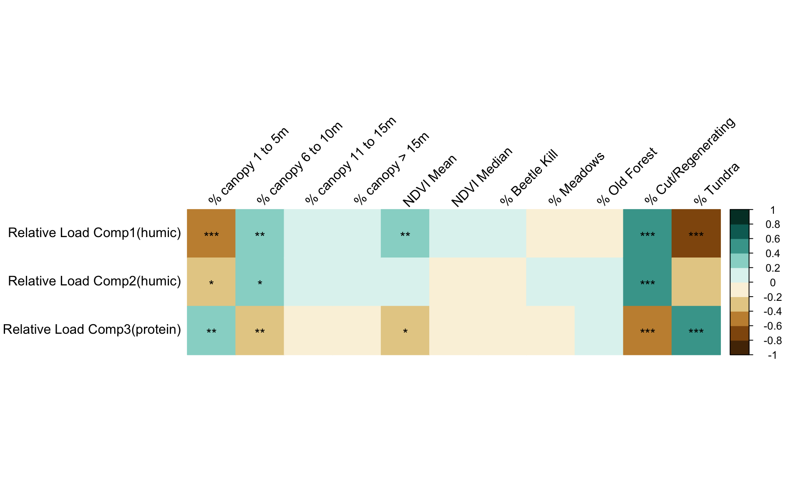

Chapter 10 Model 2 (AUTOMATED): High flows - HUMIC -WO/NUTRIENTS
********ADDED 21Jan2025 Automation with same filtering********
10.0.1 Initialize model_df with the same number of rows as filtered_df
model_df <- data.frame(matrix(ncol = 0, nrow = nrow(filtered_df)))
indicators <- list(
topo = c( "disttostreams_mean", "aspect_mean_rad", 'twi_mean', 'area_km', "elevabovestreams_mean", "elevabovestreams_median", "aspect_mean_rad"),
hydro = c("snowpack_3day_avg", "discharge_m2"),
landcover = c("percent_Beetle.kill", "percent_Meadows","percent_Old.Forest","percent_cut.regenerating",
"percent_Tundra" ,"ndvi_raster_mean"),
doc = c("relative_load_comp_1", "relative_load_comp_2", "norm_PARAF_c1", "norm_PARAF_c2", "peak_T_275.340", "Fluorescence_Index", "SUVA254", "peak_ratioAT", "peak_ratioCT")
)10.0.2 Run the function written in .R script
#20000 run winner:
## [1] 0.5960498 0.5781862 0.4946683 0.5073509 0.5274938 0.5812477 0.4304179
## [8] 0.5172193 0.4481826 0.5889583 0.4483678 0.4697791 0.5313429 0.4150566
## [15] 0.5725151 0.4483678 0.5498373 0.4614645 0.7617627 0.6066775 0.6189840
## [22] 0.4348041 0.6419010 0.4210705 0.4445241 0.5960498 0.4133769 0.5884870
## [29] 0.8118957 0.7683306 0.4353154 0.4035916 0.5002639 0.6395029 0.7668672
## [36] 0.6607977 0.5434758 0.4434226 0.4843557 0.6107041 0.5034041 0.6281391
## [43] 0.4302269 0.4946683 0.4113815 0.8551270 0.4623542 0.6112080 0.4280079
## [50] 0.6434251 0.4304179 0.4052761 0.4395988 0.4667998 0.4081290 0.4034055
## [57] 0.4014799 0.4134498 0.4280079 0.4560534 0.4950889 0.5496528 0.4728822
## [64] 0.6225958 0.5099417 0.4288534 0.5897897 0.4696719 0.4742756 0.5634949
## [71] 0.6680073 0.5611810 0.4030306 0.5084015 0.5404873 0.5094844 0.4973578
## [78] 0.5821191 0.5087235 0.4879572 0.4103341 0.6665279 0.4472311 0.5601144
## [85] 0.5519186 0.5199758 0.5005753 0.4288534 0.5015593 0.5484549 0.5243681
## [92] 0.4731889 0.5274938 0.4370462 0.5584727 0.5392455 0.6599312 0.4302269
## [99] 0.5104700 0.5309353 0.6749773 0.5295351 0.4016462 0.5995414 0.5575719
## [106] 0.6559687 0.6053434 0.4312735 0.4850034 0.4157738 0.4052761 0.4429924
## [113] 0.5559416 0.7732135 0.6559096 0.8002781 0.4662357 0.4778869 0.7514147
## [120] 0.5381907 0.5381907 0.4727634 0.4013409 0.5200706 0.7683306 0.4175694
## [127] 0.6607977 0.5364940 0.6559096 0.4481826 0.5743729 0.4161180 0.5171680
## [134] 0.5634949 0.4370065 0.7967366 0.5825070 0.4848305 0.4501315 0.4950889
## [141] 0.6607348 0.5015593 0.7078626 0.5690886 0.4696719 0.6049953 0.4036022
## [148] 0.4675643 0.6464732 0.6611193 0.4054846 0.5026198 0.6163039 0.6806806
## [155] 0.5015593 0.5585528 0.4377819 0.4196532 0.5052838 0.6149792 0.6607348
## [162] 0.4081290 0.4705920 0.4579935 0.4134498 0.6156760 0.5791177 0.6327888
## [169] 0.6290591 0.4950889 0.5316101 0.5200687 0.4265387 0.5717930 0.6467165
## [176] 0.5917508 0.5381907 0.5003356 0.4278749 0.4254962 0.4288534 0.4668574
## [183] 0.5180522 0.6651153 0.5151432 0.6272991 0.5781571 0.6627649 0.5039755
## [190] 0.5003123 0.5419457 0.4525551 0.6156760 0.4782044 0.4870338 0.5002639
## [197] 0.4266951 0.5065582 0.5186466 0.4675643 0.4643545 0.4280079 0.5011396
## [204] 0.5960498 0.4348041 0.4219904 0.6046432 0.5575719 0.5014168 0.4154309
## [211] 0.4373406 0.5386198 0.7159678 0.4427532 0.5174505 0.4054846 0.4779198
## [218] 0.5403475 0.5026198 0.4749815 0.4481826 0.4920954 0.5366029 0.5118657
## [225] 0.4988978 0.4458635 0.6607348 0.5009441 0.6758571 0.5375721 0.7688702
## [232] 0.4348041 0.4901055 0.5144186 0.4295414 0.4593213 0.5015593 0.6824461
## [239] 0.8370766 0.6535109 0.5149194 0.4072690 0.4240129 0.5601144 0.4280079
## [246] 0.6049228 0.5202013 0.5376060 0.7387026 0.4965597 0.6824461 0.7305329
## [253] 0.8118957 0.4053202 0.4426308 0.4461029 0.4283640 0.4353154 0.5538964
## [260] 0.5015593 0.6890798 0.4472311 0.5055758 0.4807171 0.4850034 0.4373406
## [267] 0.4285093 0.6434251 0.4013409 0.4885991 0.5451841 0.4472311 0.4781844
## [274] 0.5274938 0.4348041 0.6665279 0.4278620 0.5096405 0.4675643 0.4890759
## [281] 0.4353588 0.4948268 0.4052761 0.6156760 0.4977756 0.6611193 0.4304179
## [288] 0.4312735 0.4052070 0.4840989 0.5585528 0.8118957 0.8002781 0.5039755
## [295] 0.5003356 0.5201869 0.5040086 0.4067007 0.6149792 0.5755412 0.4332969
## [302] 0.4250937 0.5009441 0.4238916 0.4847433 0.4334248 0.4304179 0.5672802
## [309] 0.4367890 0.6389561 0.4434226 0.6378885 0.4481826 0.4019768 0.4175694
## [316] 0.4835171 0.4780409 0.6557947 0.5240404 0.4977638 0.8002781 0.4417007
## [323] 0.6156760 0.5480096 0.5026232 0.7732135 0.5169683 0.4627728 0.8370766
## [330] 0.4302269 0.4373406 0.4161180 0.8524449 0.5911776 0.5065582 0.4615892
## [337] 0.6758571 0.5386708 0.6826427 0.5099417 0.4881768 0.4668037 0.4620389
## [344] 0.5364940 0.8551270 0.4973578 0.5201869 0.4143928 0.4977756 0.4667998
## [351] 0.5634949 0.5040086 0.6066775 0.4578122 0.5185461 0.4697791 0.4003295
## [358] 0.4003295 0.5364603 0.6627649 0.5014513 0.6498990 0.6594924 0.4720413
## [365] 0.5493929 0.4373406 0.4702814 0.5260913 0.5287223 0.4367890 0.5457806
## [372] 0.5634766 0.4373406 0.5479244 0.4434856 0.6014249 0.4577112 0.6046432
## [379] 0.5634949 0.4154309 0.5118657 0.4434226 0.4213716 0.5407140 0.4278749
## [386] 0.6125549 0.4973578 0.4778869 0.4668037 0.5187127 0.5015593 0.4901055
## [393] 0.5039755 0.4434226 0.6120571 0.4823154 0.4014164 0.5865932 0.4407645
## [400] 0.5960498 0.5680397 0.5482557 0.4373406 0.6066775 0.6799455 0.4778869
## [407] 0.5684218 0.4478658 0.4402574 0.6890798 0.6290591 0.5659079 0.6803833
## [414] 0.5144576 0.5104159 0.6005469 0.5172847 0.5169683 0.6180327 0.5087235
## [421] 0.5952360 0.4113815 0.7617627 0.5096405 0.4850034 0.5087235 0.6419010
## [428] 0.5104700 0.4901055 0.4213716 0.4162070 0.4840989 0.4250937 0.4933108
## [435] 0.5584331 0.8370766 0.7193986 0.6057731 0.4615892 0.6066775 0.4054846
## [442] 0.4721041 0.5359091 0.4154309 0.4614645 0.4461029 0.4246425 0.4137512
## [449] 0.4533870 0.4946683 0.4983362 0.4134498 0.5065582 0.5293044 0.5774554
## [456] 0.7449066 0.4043040 0.4280079 0.5313429 0.4840989 0.5040086 0.4384642
## [463] 0.5199758 0.4892714 0.8370766 0.5377567 0.4814352 0.4143928 0.6665279
## [470] 0.4668037 0.4557316 0.5851905 0.6669586 0.5575719 0.7861942 0.7159678
## [477] 0.5601144 0.5431589 0.5366029 0.5646490 0.4353154 0.5712009 0.5781571
## [484] 0.6195895 0.6599312 0.4043040 0.4053202 0.6941667 0.6014249 0.4069778
## [491] 0.4614645 0.4134498 0.6105855 0.6611193 0.7668672 0.5634766 0.5013550
## [498] 0.4161180 0.6890798 0.4353154 0.7193986 0.5746671 0.8264099 0.5646490
## [505] 0.4974606 0.4946683 0.4213716 0.4415303 0.4154309 0.5788679 0.4449659
## [512] 0.4052761 0.4133769 0.5538964 0.4175694 0.4058360 0.4675643 0.4161180
## [519] 0.5427298 0.6066775 0.5023566 0.4572672 0.8370766 0.5169683 0.5076631
## [526] 0.5451841 0.4071297 0.4013409 0.6920189 0.8524449 0.8023602 0.5601144
## [533] 0.5102021 0.5959089 0.4808752 0.5419457 0.7617627 0.5013550 0.4614645
## [540] 0.5015593 0.4449659 0.6002490 0.7305329 0.5227309 0.5099417 0.4534002
## [547] 0.4134498 0.5645484 0.5013550 0.6749773 0.4018398 0.5405207 0.6627649
## [554] 0.7360495 0.5402298 0.6774767 0.6378901 0.5122585 0.6607348 0.5683631
## [561] 0.7159678 0.4353154 0.7362197 0.4956236 0.5140021 0.4525551 0.6594924
## [568] 0.6397683 0.4702814 0.4946683 0.6695835 0.5227309 0.4639668 0.5774554
## [575] 0.4685960 0.4304179 0.5244785 0.5443399 0.5202013 0.4483678 0.4950889
## [582] 0.4450938 0.5531901 0.4344464 0.4686963 0.4656691 0.4535364 0.4513779
## [589] 0.4000088 0.4302269 0.4054846 0.6890798 0.4280079 0.5401782 0.5609474
## [596] 0.5076631 0.4267780 0.5681108 0.4003295 0.5611688 0.8551270 0.6619228
## [603] 0.6803833 0.4662357 0.5489015 0.5197859 0.4583059 0.6125549 0.4593213
## [610] 0.4280079 0.4527150 0.4994451 0.5684218 0.5126196 0.6413395 0.5199758
## [617] 0.4973578 0.4449659 0.4973578 0.5126196 0.4696427 0.6633196 0.4451781
## [624] 0.5087235 0.4481826 0.4339329 0.4781844 0.5063598 0.5960498 0.6619228
## [631] 0.4437783 0.4213716 0.5535633 0.5096405 0.4910310 0.5053045 0.5287356
## [638] 0.5960498 0.5255530 0.6467165 0.5079305 0.4843557 0.4965597 0.4305884
## [645] 0.5084015 0.4843557 0.5509000 0.6594924 0.5556609 0.4948268 0.6890798
## [652] 0.4525551 0.4154309 0.5343260 0.5201869 0.4052070 0.5096405 0.6524429
## [659] 0.4701724 0.5645484 0.4438204 0.4395988 0.4847433 0.6607977 0.4620389
## [666] 0.8118957 0.4955802 0.5009441 0.4267780 0.4159359 0.5084015 0.5529807
## [673] 0.5169683 0.4677556 0.6195895 0.5634949 0.4124776 0.7300868 0.4614645
## [680] 0.5187648 0.4304179 0.4300268 0.4161180 0.4304192 0.5386708 0.4298877
## [687] 0.4241102 0.4134498 0.6180594 0.4560534 0.5052838 0.4527150 0.4219904
## [694] 0.4778869 0.4557316 0.6890798 0.5011396 0.4781844 0.5559416 0.4156572
## [701] 0.6272991 0.4286813 0.4955802 0.4018398 0.5102543 0.4847433 0.5607058
## [708] 0.7732135 0.8551270 0.5092572 0.7549830 0.7193986 0.4283640 0.4159694
## [715] 0.4155924 0.6618784 0.6866309 0.6118203 0.7738082 0.6359869 0.4240361
## [722] 0.4870338 0.5046018 0.4901055 0.5755389 0.5988765 0.4579935 0.5242963
## [729] 0.4527150 0.6272991 0.5634766 0.4583867 0.6112968 0.5200706 0.4196532
## [736] 0.5042770 0.4206027 0.4053202 0.4069778 0.4429924 0.5451841 0.5274938
## [743] 0.6049953 0.6046432 0.4583059 0.6607977 0.5851905 0.4155924 0.5040086## [1] 0.855127## $topo
## [1] "aspect_mean_rad"
##
## $hydro
## [1] "discharge_m2"
##
## $landcover
## [1] "percent_Tundra" "percent_Old.Forest"
##
## $doc
## [1] "Fluorescence_Index"Or we can use this to find the highest performing model where some value is specified for the ‘DOC’ response
## Best R^2 for DOC: 0.7387026
## Sampled indicators for best model:
## $topo
## [1] "aspect_mean_rad"
##
## $hydro
## [1] "discharge_m2"
##
## $landcover
## [1] "percent_Tundra"
##
## $doc
## [1] "relative_load_comp_1" "peak_ratioCT" "SUVA254"Best R^2 for DOC: 0.7387026 Sampled indicators for best model: $topo [1] “aspect_mean_rad”
$hydro [1] “discharge_m2”
$landcover [1] “percent_Tundra”
$doc [1] “relative_load_comp_1” “peak_ratioCT” “SUVA254”

10.0.4 Visualizing specific DOC results (r2 of DOC >0.4)
10.0.4.3 Combine these two ideas: Create the dataframe

###Generate the 20000 model
## [1] "topo_1" "hydro_1" "landcover_1" "doc_1" "nutr_1"## Generating the seminr model## All 33 observations are valid.##
## Results from package seminr (2.3.4)
##
## Path Coefficients:
## HYDRO LANDCOVER NUTRIENT DOC
## R^2 0.001 0.163 0.344 0.701
## AdjR^2 -0.066 0.136 0.300 0.670
## TOPO -0.029 -0.404 -0.287 .
## LANDCOVER -0.025 . -0.640 -1.002
## HYDRO . . . 0.208
## NUTRIENT . . . -0.506
##
## Reliability:
## alpha rhoC AVE rhoA
## TOPO 1.000 1.000 1.000 1.000
## LANDCOVER 1.000 1.000 1.000 1.000
## HYDRO 1.000 1.000 1.000 1.000
## NUTRIENT 1.000 1.000 1.000 1.000
## DOC 1.000 1.000 1.000 1.000
##
## Alpha, rhoC, and rhoA should exceed 0.7 while AVE should exceed 0.510.0.5 Results of bootstrapped PLS
## Original Est. Bootstrap Mean Bootstrap SD T Stat. 5% CI
## TOPO -> LANDCOVER 0.404 0.464 0.167 2.417 0.216
## TOPO -> HYDRO 0.019 0.168 0.140 0.138 0.011
## TOPO -> NUTRIENT 0.028 0.129 0.094 0.301 0.013
## TOPO -> DOC 0.624 0.647 0.125 5.005 0.439
## LANDCOVER -> HYDRO 0.013 0.135 0.117 0.109 0.011
## LANDCOVER -> NUTRIENT 0.525 0.514 0.122 4.294 0.284
## LANDCOVER -> DOC 0.740 0.699 0.131 5.626 0.448
## HYDRO -> NUTRIENT 0.360 0.351 0.180 2.004 0.044
## HYDRO -> DOC 0.039 0.119 0.098 0.393 0.007
## NUTRIENT -> DOC 0.095 0.188 0.133 0.717 0.017
## 95% CI
## TOPO -> LANDCOVER 0.723
## TOPO -> HYDRO 0.458
## TOPO -> NUTRIENT 0.304
## TOPO -> DOC 0.844
## LANDCOVER -> HYDRO 0.384
## LANDCOVER -> NUTRIENT 0.677
## LANDCOVER -> DOC 0.873
## HYDRO -> NUTRIENT 0.637
## HYDRO -> DOC 0.301
## NUTRIENT -> DOC 0.439This gives us the confidence intervals of the HTMT ratio.